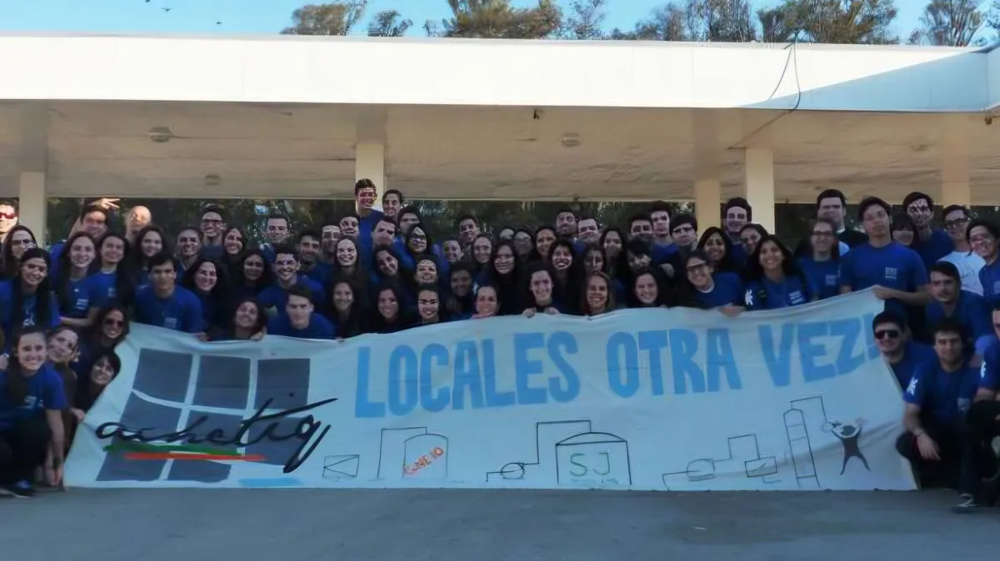

Centralizamos material académico de las cuarenta y una materias del Plan 2023, organizado por año y por materia. Los apuntes provienen de los propios estudiantes, con el correo institucional como canal de aporte continuo.
Sobre la asociación
Quiénes somos
AChETIQ es una asociación civil sin fines de lucro fundada el 30 de abril de 2009 en la Universidad Tecnológica Nacional, Facultad Regional Resistencia (UTN FRRe), provincia de Chaco. Sus antecedentes se remontan a 2003, cuando comenzó la representación de la FRRe ante la Federación Nacional de Estudiantes de Ingeniería Química.
Reúne a los estudiantes de la carrera de Ingeniería Química de la UTN FRRe y trabaja sobre cuatro frentes: cursos y conferencias, eventos, prensa y difusión, y proyectos solidarios.
Conocé más sobre AChETIQ
Cuatro frentes de trabajo
Nuestros gabinetes
-
Cursos y Conferencias
Formación continua dictada por profesionales, más allá del aula.
Ver gabinete -
Eventos
Encuentros que fortalecen los vínculos de la comunidad estudiantil.
Ver gabinete -
Prensa y Difusión
Comunicación institucional y difusión de las actividades de la asociación.
Ver gabinete -
Solidario
Colectas, voluntariado y eventos a beneficio de la comunidad.
Ver gabinete
Material académico
Recursos para tu carrera
Formá parte
Sumate a AChETIQ
Participá en los gabinetes de trabajo, accedé a recursos académicos y conectá con otros estudiantes de Ingeniería Química.